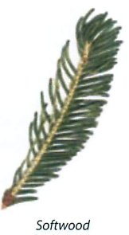
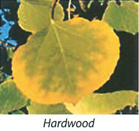

You are now in a forest dominated by trembling aspen, with some balsam poplar and white spruce.
Why 'mixedwood'? The boreal forest is comprised of a mixture of hardwoods (trembling aspen, balsam poplar, white birch) and softwoods (black and white spruce, balsam fir, tamarack and jack pine). Which trees grow where is  determined by differences in soil, moisture conditions, and the type and frequency of natural and human-caused disturbances (fire, logging, insect infestations, disease). The boreal forest is a mosaic of various-sized patches of forest differing in age and composition.
Poke your finger into the soil. You may notice soils here have less sand and more clay and the depth of the forest litter - dead material - is much greater than in the jack pine forest. Decomposing forest litter feeds a more lush understory of shrubs and herbaceous plants.
Compare the two poplar species. Can you see the deep dark  furrows along the trunk of the balsam poplar? The trembling aspen with the greenish-white, smooth trunk is located here as well. Can you see it? The trunk of the trembling aspen has a white powder that will rub off on your hand; it is believed by some to act as a sunscreen for the tree.
As you walk to your next stop, watch for signs of animal activity.